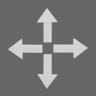

视角
旋转
图标：使用滑动手势来围绕X轴和Y轴旋转。使用缩放手势来围绕Z轴旋转。
设置旋转值： 长按主按钮来显示输入界面。输入每个轴的旋转值，单位是度。
两种旋转模式可供选择. “总量”模式表示从初始状态进行旋转。“增量”模式表示从当前状态进行旋转。
平移
图标： 使用滑动手势来沿着X轴和Y轴平移。使用缩放手势来沿着Z轴平移。
设置平移值： 长按主按钮来显示输入界面。 输入每个轴的平移值。
变焦
图标：使用缩放手势来变焦。
设置
三种渲染质量可供选择：低、中和高。